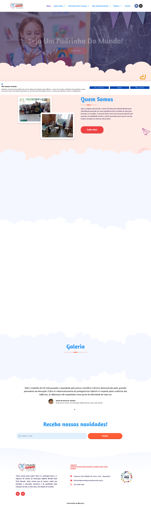
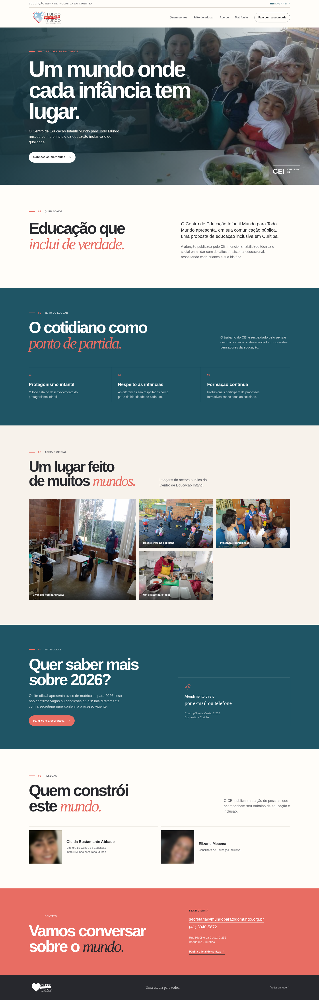
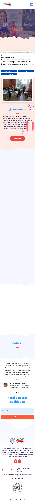
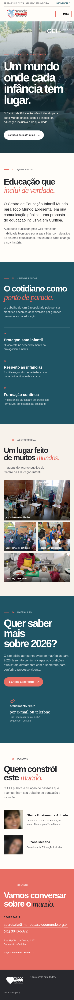

Conteúdo que parou no tempo
“Últimas Notícias” ainda destaca publicações de 2019 e 2020, inclusive o comunicado sobre medidas da Covid-19, enquanto o site já apresenta aviso de matrículas para 2026.
Oportunidade digital
Este conceito independente reorganiza o que o site público já comunica: educação inclusiva, pertencimento, Curitiba e uma porta de entrada mais clara para famílias.




“Últimas Notícias” ainda destaca publicações de 2019 e 2020, inclusive o comunicado sobre medidas da Covid-19, enquanto o site já apresenta aviso de matrículas para 2026.
Na captura auditada, um modal de cadastro e a faixa de consentimento de cookies aparecem juntos e encobrem quase todo o banner principal.
A galeria aparece sem fotografias no carregamento inspecionado e 11 das 13 imagens encontradas no HTML não tinham texto alternativo útil.
Hero com a mensagem “Uma escola para todos”, matrículas em destaque e um caminho direto para a secretaria.
Seções curtas para quem somos, jeito de educar, acervo, matrículas e contato — com leitura confortável em qualquer tela.
Hierarquia semântica, textos alternativos úteis, foco visível, navegação por teclado e contrastes revisados.
Fontes consultadas: site oficial (mundoparatodomundo.org.br), página oficial de contato, Instagram público e relatório de auditoria datado de 15/07/2026. Este documento não afirma vagas disponíveis, valores, horários, equipe além do que está publicado, credenciais, resultados, depoimentos ou serviços não confirmados.